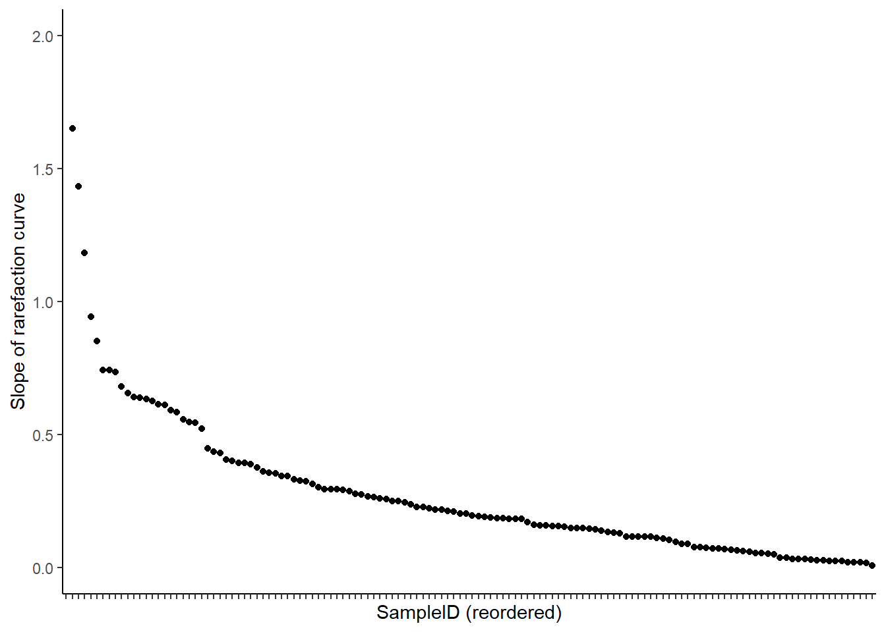

Last updated: 2021-10-06
Checks: 6 1
Knit directory: Project_in_Bioinformatics_E21/
This reproducible R Markdown analysis was created with workflowr (version 1.6.2). The Checks tab describes the reproducibility checks that were applied when the results were created. The Past versions tab lists the development history.
Great! Since the R Markdown file has been committed to the Git repository, you know the exact version of the code that produced these results.
Great job! The global environment was empty. Objects defined in the global environment can affect the analysis in your R Markdown file in unknown ways. For reproduciblity it’s best to always run the code in an empty environment.
The command set.seed(20210919) was run prior to running the code in the R Markdown file. Setting a seed ensures that any results that rely on randomness, e.g. subsampling or permutations, are reproducible.
Great job! Recording the operating system, R version, and package versions is critical for reproducibility.
Nice! There were no cached chunks for this analysis, so you can be confident that you successfully produced the results during this run.
Using absolute paths to the files within your workflowr project makes it difficult for you and others to run your code on a different machine. Change the absolute path(s) below to the suggested relative path(s) to make your code more reproducible.
| absolute | relative |
|---|---|
| C:/Users/ASUS/Google Drev/AU/Aktuelle/PiB/Project_in_Bioinformatics_E21/code/Rhea-master/1.Normalization | code/Rhea-master/1.Normalization |
| C:/Users/ASUS/Google Drev/AU/Aktuelle/PiB/Project_in_Bioinformatics_E21 | . |
Great! You are using Git for version control. Tracking code development and connecting the code version to the results is critical for reproducibility.
The results in this page were generated with repository version f18b84e. See the Past versions tab to see a history of the changes made to the R Markdown and HTML files.
Note that you need to be careful to ensure that all relevant files for the analysis have been committed to Git prior to generating the results (you can use wflow_publish or wflow_git_commit). workflowr only checks the R Markdown file, but you know if there are other scripts or data files that it depends on. Below is the status of the Git repository when the results were generated:
Ignored files:
Ignored: .Rhistory
Ignored: .Rproj.user/
Ignored: analysis/.Rhistory
Untracked files:
Untracked: code/Rhea-master/
Untracked: data/get_seq.r
Untracked: oil_spill.nwk
Untracked: treemaker.sh
Note that any generated files, e.g. HTML, png, CSS, etc., are not included in this status report because it is ok for generated content to have uncommitted changes.
These are the previous versions of the repository in which changes were made to the R Markdown (analysis/5_step_1.Rmd) and HTML (docs/5_step_1.html) files. If you’ve configured a remote Git repository (see ?wflow_git_remote), click on the hyperlinks in the table below to view the files as they were in that past version.
| File | Version | Author | Date | Message |
|---|---|---|---|---|
| Rmd | f18b84e | stinekrye | 2021-10-06 | wflow_publish(“./analysis/5_step_1.Rmd”) |
| html | 4210d3a | stinekrye | 2021-10-06 | Build site. |
| Rmd | 059129b | stinekrye | 2021-10-06 | wflow_publish(“./analysis/5_step_1.Rmd”) |
| html | f8883cd | stinekrye | 2021-10-06 | Build site. |
| Rmd | 09a18b1 | stinekrye | 2021-10-06 | wflow_publish(“analysis/5_step_1.Rmd”) |
| html | fec4b03 | stinekrye | 2021-10-06 | Build site. |
| Rmd | ae8a430 | stinekrye | 2021-10-06 | wflow_publish(“analysis/5_step_1.Rmd”) |
| Rmd | c8fdc99 | stinekrye | 2021-10-06 | wflow_git_commit(“analysis/5_step_1.Rmd”) |
| Rmd | d8c1e03 | stinekrye | 2021-10-06 | updata files |
| Rmd | e8218b8 | stinekrye | 2021-10-06 | wflow_git_commit(all = TRUE) |
| Rmd | 5092f38 | stinekrye | 2021-10-04 | clean-up of old files |
The purpose of this script is to illustrate the workflow of how to produce/explore the following:
- 2.3.2.1: Remove singletons, unwanted sequences and negative controls
- 2.3.2.2: Normalize data and removal of samples with low count (Using Rhea)
- 2.3.3: Alpha diversity (also include pcr data. correlation of index and pcr abundance), (bacteria, chloroplast).
library(tidyverse)
library(readxl)
library(phyloseq)
library(vegan)
sampleData <- read_excel("./data/sampleData.xlsx") %>% column_to_rownames(., var = "Samples")
asvTable <- read.delim("./data/oil_ASVtable.txt", sep = "\t", row.names = "ASVs", check.names = F) #%>% select(., -'row.names')
taxaId <- read.delim("./data/oil_ASVtaxid.txt", sep = "\t", row.names = "ASVs") %>% select(., -'row.names')This is done to make the workflow / troubleshooting easier
asvTable <- otu_table(asvTable, taxa_are_rows = TRUE)
sampleData <- sample_data(sampleData)
taxaId <- tax_table(as.matrix(taxaId))
phyloData <- phyloseq(asvTable,sampleData, taxaId)
gfData <- subset_samples(phyloData, region == "GF")
GF_asvTable <- as.data.frame(otu_table(gfData))
GF_sampleData <- as.data.frame(sample_data(gfData))
GF_taxaId <- as.data.frame(tax_table(taxaId))The table needed for Rhea is a tab seperated OTU/ASV table with ASVs as rownames and samplenames as columns. In addidtion to that, we need the taxonomy levels seperated with semicolons as the last column names "taxonomy.
oil_ASVtable needs a taxonomy column.
taxo <- GF_taxaId
taxo$taxonomy <- paste(taxo$Kingdom, taxo$Phylum, taxo$Order, taxo$Family, taxo$Class, taxo$Genus, taxo$V7, sep = ";") # concatenate rows
taxo <- taxo %>% select(c(taxonomy)) # make dataframe ready for merge
rhea_GF_asvTable <- merge(as.data.frame(GF_asvTable), taxo, by = 0) # 0 = rownames
rhea_GF_asvTable <- column_to_rownames(rhea_GF_asvTable, var = "Row.names") # restore rownames
#write.table(rhea_GF_asvTable, file = "oil_ASVtable_RHEA.txt", sep = "\t", quote = F) # Is moved to the Rhea folder
head(rhea_GF_asvTable)[123:128] FGJuly_116_S106_F_filt.fastq.gz FGJuly_141_S118_F_filt.fastq.gz
ASV1 743 3237
ASV10 148 25
ASV100 0 0
ASV1000 0 0
ASV10000 0 0
ASV10001 0 0
FGJuly_143_S35_F_filt.fastq.gz FGJuly_157_S47_F_filt.fastq.gz
ASV1 3485 227
ASV10 0 213
ASV100 0 0
ASV1000 0 0
ASV10000 0 0
ASV10001 0 0
FGJuly_158_S59_F_filt.fastq.gz FGJuly_159_S71_F_filt.fastq.gz
ASV1 175 19
ASV10 154 418
ASV100 0 0
ASV1000 0 0
ASV10000 0 0
ASV10001 0 0First we need to remove singletons, chloroplast and mitochondrial species, and negatibe controls. - Ioannis have removed singletons, chloroplast and mitocondrial species - We have no negative controls in the in situ samples. By negative controls I mean a control which has not been in contact with any bacteria, but has been sequences to investigate the amount of “background noise” from the project.
Run two times:
- First time to identify underrepresented samples, which has to be removed
- Second time the analysis is made based on the updated OTU table.
The following has been changed in the Rhea Normalization.R file: setwd(“C:/Users/ASUS/Google Drev/AU/Aktuelle/PiB/Project_in_Bioinformatics_E21/code/Rhea-master/1.Normalization”) file_name <- “oil_ASVtable_RHEA.txt” labelCutoff <- 10
#source("./code/Rhea-master/1.Normalization/Normalization.R")
#setwd("C:/Users/ASUS/Google Drev/AU/Aktuelle/PiB/Project_in_Bioinformatics_E21")Use the slope of the rarefaction curve to decide cut-off
- ** How do you do this? **
- My idea: Make a plot whuch enables us to find the outliers and cut them away. The cut-off can be choosen based on a visual expection
rslope <- read.delim("./code/Rhea-master/1.Normalization/1_RarefactionCurve.TAB", sep = "\t", check.names = F)
rslope %>% ggplot(mapping = aes(x = reorder(SampleID, -slope), y = slope)) +
geom_point() +
ylim(0, 2) +
theme_classic()+
theme(axis.text.x=element_blank())+
xlab("SampleID (reordered)") +
ylab("Slope of rarefaction curve")Warning: Removed 1 rows containing missing values (geom_point).
First find the names of the samples, which gets excluded based on a large slope
# set threshold set by visual inspection of the plot
cut <- rslope[rslope$slope > 0.75,]Then find samples, which gets excluded based on a low number of total reads. This threshold cuts away samples with a size of 0-3. The lowest read counts after removal of those is just below 20000.
# Cut away samples based on too low count.
too_low_sample_size <- colnames(GF_asvTable)[colSums(GF_asvTable) < 10000]Remove those samples from the phyloseq object, so we can use it to generate a new input file for Rhea
# Cut away unwanted sequences
unwanted <- c(cut$SampleID, too_low_sample_size)
wanted <- colnames(GF_asvTable)[!colnames(GF_asvTable) %in% unwanted]
gfDataCut <- prune_samples(wanted,gfData)Make new Rhea file
taxo <- as.data.frame(tax_table(taxaId))
taxo$taxonomy <- paste(taxo$Kingdom, taxo$Phylum, taxo$Order, taxo$Family, taxo$Class, taxo$Genus, taxo$V7, sep = ";") # concatenate rows
taxo <- taxo %>% select(c(taxonomy)) # make dataframe ready for merge
rhea_GF_asvTable <- merge(as.data.frame(otu_table(gfDataCut)), taxo, by = 0) # 0 = rownames
rhea_GF_asvTable <- column_to_rownames(rhea_GF_asvTable, var = "Row.names") # restore rownames
#write.table(rhea_GF_asvTable, file = "oil_ASVtable_RHEA_CUT.txt", sep = "\t", quote = F) # Is moved to the Rhea folderThe following has been changed in the Rhea Normalization.R file: setwd(“C:/Users/ASUS/Google Drev/AU/Aktuelle/PiB/Project_in_Bioinformatics_E21/code/Rhea-master/1.Normalization”) file_name <- “oil_ASVtable_RHEA_CUT.txt” labelCutoff <- 5
#source("../code/Rhea-master/1.Normalization/Normalization.R")
#setwd("C:/Users/ASUS/Google Drev/AU/Aktuelle/PiB/Project_in_Bioinformatics_E21")The output file with normalized read counts is used in the next step
Use the normalized read counts
#source("../code/Rhea-master/2.Alpha-Diversity/Alpha-Diversity.R")
#setwd("C:/Users/ASUS/Google Drev/AU/Aktuelle/PiB/Project_in_Bioinformatics_E21")Idea: Make two plots: - One with qPCR abundance values against both of the effective indexes (color coded) - One with one of the effective indexes against the sample name. The point has to be colored in accordance to some grouping Eg. (1st grouping: in situ + sea water, 2nd grouping: Deep, sediment, surface)
Merge the sampleData and the alpha-diversity measures in one table to make plotting easier
alpha <- read.delim("./code/Rhea-master/2.Alpha-Diversity/alpha-diversity.TAB", sep = "\t", check.names = F, row.names = 1)
alphaSampleData <- merge(sampleData, alpha, by = 0)The data is seperated into in situ vs. SW and then additionally seperated into deep, sediment and surface
alphaSampleData %>% ggplot(mapping = aes(x = location, y = Simpson.Effective)) +
geom_violin() +
facet_wrap("type")alphaSampleData %>% ggplot(mapping = aes(x = location, y = Simpson.Effective)) +
geom_jitter(aes(color = oil)) +
facet_wrap("type")alphaSampleData %>% ggplot(mapping = aes(x = location, y = Simpson.Effective)) +
geom_jitter(aes(color = Evenness)) +
facet_wrap("type")How can it make sense that the blanks has high alpha diversity, when Shannon and Simpson index is used?
When using effective richness (enumeration) the distribution looks random. Does this show that the samples with oils might be dominated by a few species?
Notes on Shannon: H = (Relative proportion of species * the natural logarithmic function of that relative proportion) summed over all species. Evenness is H / ln(S) where S is the total number of species in that sample. Low evenness means that a few species dominate *
The y axis is log scale. This seperates the points better.
Is it bad to have a correlation? Could that mean a correlation between the size of the sample and the richness? If we have no correlation, does that mean that the effective richness does not depend so much on sample size?
alphaSampleData %>% ggplot(mapping = aes(y = QPCRCopies)) +
#geom_point(aes(x = Shannon.Effective, color = "Shannon")) +
geom_point(aes(x = Simpson.Effective, color = "Simpson")) +
scale_y_log10() +
#xlim(0,100) +
NULLWarning: Removed 3 rows containing missing values (geom_point).Maybe do the same with phyloseq?
sessionInfo()R version 4.1.1 (2021-08-10)
Platform: x86_64-w64-mingw32/x64 (64-bit)
Running under: Windows 10 x64 (build 19042)
Matrix products: default
locale:
[1] LC_COLLATE=Danish_Denmark.1252 LC_CTYPE=Danish_Denmark.1252
[3] LC_MONETARY=Danish_Denmark.1252 LC_NUMERIC=C
[5] LC_TIME=Danish_Denmark.1252
attached base packages:
[1] stats graphics grDevices utils datasets methods base
other attached packages:
[1] vegan_2.5-7 lattice_0.20-44 permute_0.9-5 phyloseq_1.36.0
[5] readxl_1.3.1 forcats_0.5.1 stringr_1.4.0 dplyr_1.0.7
[9] purrr_0.3.4 readr_2.0.1 tidyr_1.1.3 tibble_3.1.4
[13] ggplot2_3.3.5 tidyverse_1.3.1 workflowr_1.6.2
loaded via a namespace (and not attached):
[1] nlme_3.1-152 bitops_1.0-7 fs_1.5.0
[4] lubridate_1.7.10 httr_1.4.2 rprojroot_2.0.2
[7] GenomeInfoDb_1.28.4 tools_4.1.1 backports_1.2.1
[10] utf8_1.2.2 R6_2.5.1 mgcv_1.8-36
[13] DBI_1.1.1 BiocGenerics_0.38.0 colorspace_2.0-2
[16] rhdf5filters_1.4.0 ade4_1.7-18 withr_2.4.2
[19] tidyselect_1.1.1 compiler_4.1.1 git2r_0.28.0
[22] cli_3.0.1 rvest_1.0.1 Biobase_2.52.0
[25] xml2_1.3.2 labeling_0.4.2 scales_1.1.1
[28] digest_0.6.27 rmarkdown_2.11 XVector_0.32.0
[31] pkgconfig_2.0.3 htmltools_0.5.2 dbplyr_2.1.1
[34] fastmap_1.1.0 highr_0.9 rlang_0.4.11
[37] rstudioapi_0.13 farver_2.1.0 jquerylib_0.1.4
[40] generics_0.1.0 jsonlite_1.7.2 RCurl_1.98-1.5
[43] magrittr_2.0.1 GenomeInfoDbData_1.2.6 Matrix_1.3-4
[46] biomformat_1.20.0 Rhdf5lib_1.14.2 Rcpp_1.0.7
[49] munsell_0.5.0 S4Vectors_0.30.0 fansi_0.5.0
[52] ape_5.5 lifecycle_1.0.0 stringi_1.7.4
[55] whisker_0.4 yaml_2.2.1 MASS_7.3-54
[58] zlibbioc_1.38.0 rhdf5_2.36.0 plyr_1.8.6
[61] grid_4.1.1 parallel_4.1.1 promises_1.2.0.1
[64] crayon_1.4.1 splines_4.1.1 Biostrings_2.60.2
[67] haven_2.4.3 multtest_2.48.0 hms_1.1.0
[70] knitr_1.34 pillar_1.6.2 igraph_1.2.6
[73] reshape2_1.4.4 codetools_0.2-18 stats4_4.1.1
[76] reprex_2.0.1 glue_1.4.2 evaluate_0.14
[79] data.table_1.14.0 modelr_0.1.8 vctrs_0.3.8
[82] tzdb_0.1.2 httpuv_1.6.3 foreach_1.5.1
[85] cellranger_1.1.0 gtable_0.3.0 assertthat_0.2.1
[88] xfun_0.26 broom_0.7.9 later_1.3.0
[91] survival_3.2-11 iterators_1.0.13 IRanges_2.26.0
[94] cluster_2.1.2 ellipsis_0.3.2